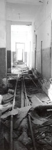

Online Exhibit → Gulag Museum
Introduction: Gulag Museum

“To promote democratic values and civic consciousness in contemporary Russia through preservation of the last Soviet political camp as a living reminder of repression and as an important historical and cultural monument.”
Mission statement of the Gulag Museum.
A dedicated group of activists has turned the last Soviet-era labor camp for political prisoners into a museum and historic site, as they seek to shape a just Russian present by remembering the legacy of past Soviet injustice.
Online Exhibit | Reflections | Traveling Exhibit | Teacher Resources | About
© 2006–2021, Center for History and New Media, George Mason University.